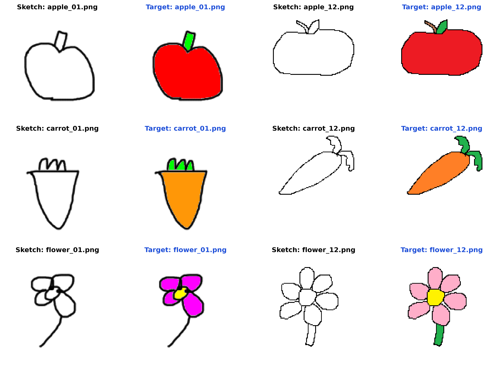
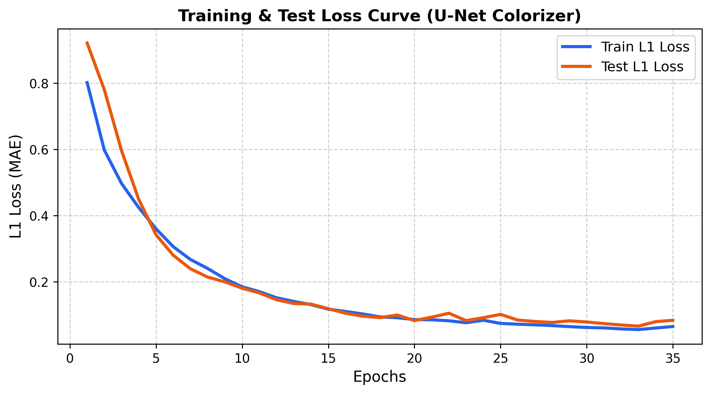
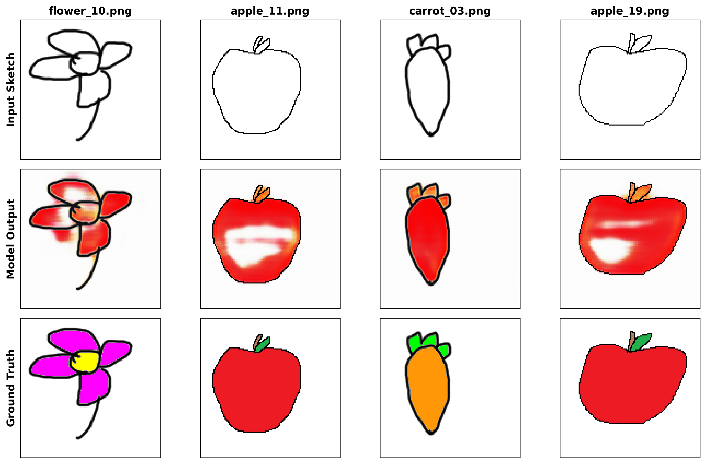

การเรียนรู้เชิงลึกเพื่อการแปลงภาพลายเส้นเป็นภาพสีเป้าหมายด้วย U-Net
การวาดภาพสเก็ตและสร้างภาพสีเป้าหมายด้วยตนเอง 100%

ตัวอย่างคู่ภาพ (Sketch ลายเส้น ซ้าย | Color สีเป้าหมาย ขวา)
Data Pipeline, Resizing, Normalization และสัดส่วนการทดลอง
128 × 128 px[0, 255] ให้อยู่ในช่วง [-1, 1] เพื่อให้สอดคล้องกับ Activation Tanh ที่ Output layerapple_01.pngnp.random.seed(42) ทำให้ผลการสุ่มคงที่ สามารถรันซ้ำได้ 100%โครงสร้างโมเดล Image-to-Image พร้อม Skip Connections และ Loss Function
Tanh ผลิตภาพสี RGB 3 ช่อง0.001กราฟการลู่เข้าของ Loss Curve และตัวเลขชี้วัดบนชุดทดสอบ (Test Set)

เปรียบเทียบภาพวาดสเก็ต ➔ ภาพสีที่โมเดลเติมให้ ➔ ภาพเป้าหมายจริง (Test Set)
